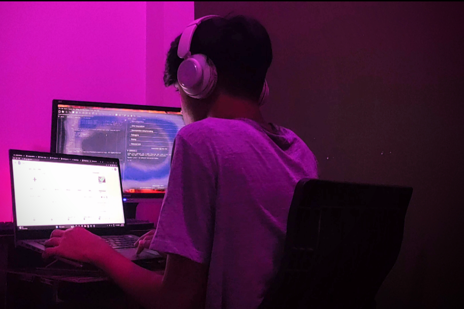

Welcome to my personal blog, a space where I share stories, experiences, and reflections from my notable days. Join me on this journey of personal growth, adventures, and the little joys that make life special.
I am not only into technology, you'll find me enjoying outdoor adventures and exploring new hobbies. Whether it’s hiking through scenic trails, experimenting with new recipes, or immersing myself in creative projects, these experiences keep me balanced and inspired. I believe in the power of blending work with play to fuel creativity and maintain energy.
My professional path has been shaped by diverse experiences across several remarkable organizations and startups. Each role has contributed to my growth and passion for technology:
Choosing me means partnering with a dedicated and passionate developer who brings a wealth of experience across AI, ML, web development, and DevOps. With a Bachelor of Technology in AI and ML, a patent in advanced surveillance technology, and hands-on experience in creating dynamic web applications, I am equipped to tackle complex challenges and deliver innovative solutions. My commitment to continuous learning ensures that I stay at the forefront of technological advancements. Whether it's developing scalable applications, enhancing user experiences, or implementing robust security measures, I bring a comprehensive and results-driven approach to every project. Let's collaborate to transform your ideas into reality and drive impactful technological advancements together.
Another memorable trip was a spontaneous plan to Anantha Giri Hills. It was a 36-hour road trip during the monsoon, where we had an incredible experience walking and trekking through the hills. One of the most special moments of this trip was spending a sleepless night sitting by the roadside, chatting with strangers, and asking for various things. It was a small but notable adventure that left a lasting impression.
Delhi, the capital of India, is a city I’ve visited twice. The first time was when I was a child, so I don't remember much about it. The second time, I went with my family and my sister, and it was an "okay" kind of experience.